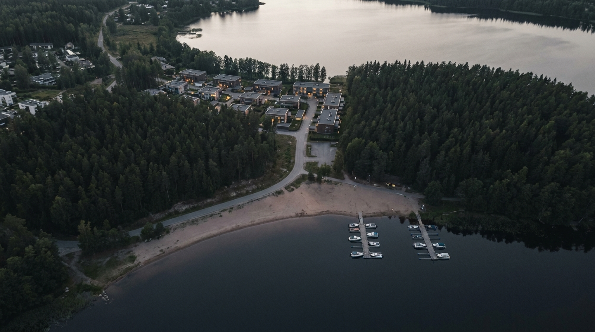

Seen from four hundred metres, NORD is mostly water and canopy — the buildings take what is left. The lake holds the district’s west edge, birch forest closes the north, and one slow road stitches the marina to the courts. Scroll, and the aerial explains itself: three colours, three ways to spend an hour.

Lake Helle Nord MarinaTen minutes to the park, six to the water — the district measures itself in walks, not addresses.